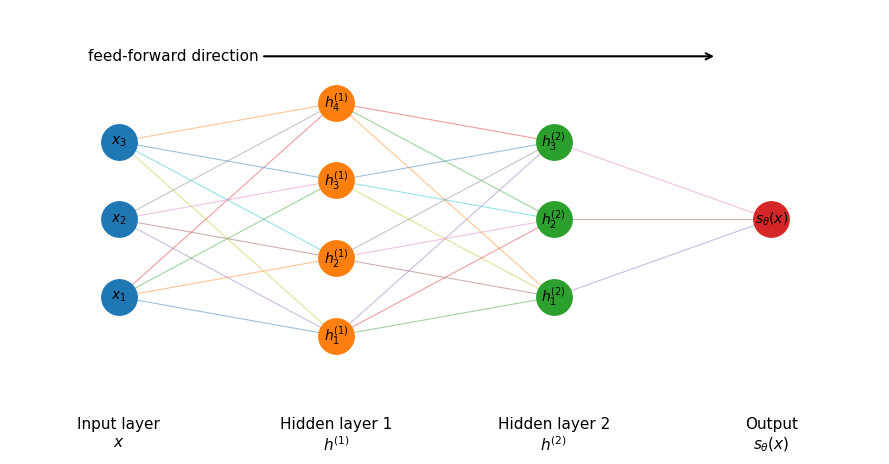

These materials were developed with assistance from AI tools. All content has been reviewed and edited by the instructor, who takes final responsibility for its accuracy, clarity, and appropriateness for the course. Students should treat these materials as instructor-reviewed course content while applying the same critical judgment they would use with any technical material. Please report any suspected errors or unclear explanations to ghunt@wm.edu.
Linear regression uses a scalar score \(s_w(x)=w^\top x\). Multiclass logistic regression uses a vector of scores \(s_W(x)=W^\top x\) and converts them to probabilities with softmax. A neural network keeps this score-and-loss framework but builds its score by composing learned layers:
Each layer takes the previous layer’s output as its input. Each map \(s_i\) has parameters \(\theta_i\); we collect them into \(\theta=(\theta_1,\ldots,\theta_L)\). To understand what we gain from this composition, start with the idea of learning features.
12.1 From Fixed to Learned Features
With two raw features, polynomial regression might use the fixed feature map
The coordinates of \(h^{(1)}\) and \(h^{(2)}\) are the new features. They are called hidden because they are intermediate values, rather than observed inputs or the final output. Their definitions depend on the layer parameters: fitting learns both the features and their final combination jointly.
What operations should these learned maps perform?
12.2 Inside a Layer
A typical hidden layer has two steps: form weighted sums of its inputs, then apply a nonlinear function to each result.
Let \(h^{(0)}=x\in\mathbb R^D\). If layer \(i\) receives \(h^{(i-1)}\), it computes
The entries of \(W^{(i)}\) are weights and those of \(b^{(i)}\) are biases (intercepts). The vector \(a^{(i)}\) is the pre-activation: the weighted sums before applying the activation function\(\phi_i\).
To see what one unit does, take row \(j\) of \(W^{(i)}\), written \((w_j^{(i)})^\top\):
Each unit uses its own weights to combine the previous features and produces one new feature. Stacking these results gives \(h^{(i)}\). Applying \(\phi_i\)componentwise means applying the same scalar function separately to each entry of \(a^{(i)}\).
Thus the layer map is \(s_i(h)=\phi_i(W^{(i)}h+b^{(i)})\). For the fixed activation functions below, its learned parameters are \(\theta_i=(W^{(i)},b^{(i)})\).
12.2.1 Dimensions, Width, and Depth
Suppose layer \(i\) receives \(d_{i-1}\) features and produces \(d_i\) features, with \(d_0=D\). Then
There is one row of weights per output unit and one column per input feature. Each output unit also needs one bias, so the layer has
\[
d_id_{i-1}+d_i=d_i(d_{i-1}+1)
\]
parameters.
The width of layer \(i\) is \(d_i\). Here depth\(L\) counts learned layers, including the output layer but excluding the input. Some sources count only hidden layers, so specify the convention.
12.2.2 Activation Functions
Common choices for hidden units are
Activation
Scalar function
ReLU
\(\phi(t)=\max\{0,t\}\)
Sigmoid
\(\sigma(t)=1/(1+e^{-t})\)
Hyperbolic tangent
\(\phi(t)=\tanh(t)\)
For example, ReLU keeps positive pre-activations and replaces negative ones with zero. The identity activation \(\phi(t)=t\) leaves values unchanged; it is common at a regression output.
Why use nonlinear activations in hidden layers? Without them, two successive layers reduce to
Here \(V\) and \(b^{\mathrm{out}}\) are the output weights and bias. Substituting each intermediate result into the next makes the nested structure explicit:
The diagram has input width \(D=3\), hidden widths \(4\) and \(3\), and one scalar output. A connection is one weight; each non-input unit also has a bias. Information moves from input to output, so the network is feed-forward.
Show code
import matplotlib.pyplot as pltimport numpy as np# Network architecture:# 3 input features, 4 units in hidden layer 1,# 3 units in hidden layer 2, 1 outputlayer_sizes = [3, 4, 3, 1]layer_labels = ["Input layer\n$x$","Hidden layer 1\n$h^{(1)}$","Hidden layer 2\n$h^{(2)}$","Output\n$s_\\theta(x)$"]fig, ax = plt.subplots(figsize=(9, 4.8))# Horizontal position of each layerx_positions = np.arange(len(layer_sizes))# Store node coordinatesnode_positions = []for i, size inenumerate(layer_sizes):# Vertically center the nodes in each layer y_positions = np.linspace(-(size -1) /2, (size -1) /2, size) layer_nodes = [(x_positions[i], y) for y in y_positions] node_positions.append(layer_nodes)# Draw connections between adjacent layersfor i inrange(len(layer_sizes) -1):for x1, y1 in node_positions[i]:for x2, y2 in node_positions[i +1]: ax.plot([x1, x2], [y1, y2], linewidth=0.8, alpha=0.45)# Draw nodes and labelsfor i, layer_nodes inenumerate(node_positions): xs = [p[0] for p in layer_nodes] ys = [p[1] for p in layer_nodes] ax.scatter(xs, ys, s=650, zorder=3)for j, (x, y) inenumerate(layer_nodes, start=1):if i ==0: label =f"$x_{j}$"elif i ==len(layer_sizes) -1: label ="$s_\\theta(x)$"else: label =f"$h^{{({i})}}_{j}$" ax.text(x, y, label, ha="center", va="center", fontsize=10, zorder=4)# Add layer labels underneathfor i, label inenumerate(layer_labels): ax.text(x_positions[i], -2.55, label, ha="center", va="top", fontsize=11)# Add feed-forward direction arrowax.annotate("feed-forward direction", xy=(2.75, 2.1), xytext=(0.25, 2.1), arrowprops=dict(arrowstyle="->", linewidth=1.5), ha="center", va="center", fontsize=11)ax.set_xlim(-0.5, len(layer_sizes) -0.5)ax.set_ylim(-3.0, 2.7)ax.axis("off")fig.tight_layout()plt.show()

For this diagram, \(W^{(1)}\in\mathbb R^{4\times3}\), \(W^{(2)}\in\mathbb R^{3\times4}\), and the scalar output layer has a weight vector in \(\mathbb R^3\). The input layer supplies data; it has no fitted parameters. The two hidden layers produce \(h^{(1)}\in\mathbb R^4\) and \(h^{(2)}\in\mathbb R^3\) before the output score is formed.
The \(j\)th learned feature is \(h_j=\phi(w_j^\top x+b_j)\), where \(w_j^\top\) is row \(j\) of \(W\). A scalar output layer gives
\[
s_\theta(x)=v^\top h+b^{\mathrm{out}}
=v^\top\phi(Wx+b)+b^{\mathrm{out}},\qquad v\in\mathbb R^H,\quad b^{\mathrm{out}}\in\mathbb R.
\]
The output is a linear regression-style combination of the learned features. For regression, the prediction is \(f_\theta(x)=s_\theta(x)\); we typically fit using squared loss.
12.6 One Hidden Layer: Classification
For \(K\) classes, the output layer has \(K\) units. With the same \(h\in\mathbb R^H\),
We fit the parameters using categorical cross-entropy, as in multiclass logistic regression.
The predicted class is \(\arg\max_c s_{\theta,c}(x)=\arg\max_c p_{\theta,c}(x)\). Here \(s_\theta\) denotes logits and \(p_\theta\) denotes probabilities. If software includes softmax in the final layer, its output is \(p_\theta\); the loss must match that convention.
12.6.1 A Nested Classifier with Explicit Shapes
Suppose \(D=2\), the hidden widths are \(3\) and \(2\), and \(K=3\). One possible architecture is
Here \(b^{(1)}\in\mathbb R^3\), \(b^{(2)}\in\mathbb R^2\), and \(b^{\mathrm{out}}\in\mathbb R^3\). The last three numbers are logits; softmax acts after this final affine map. Every matrix and bias in the display is collected in \(\theta\) and will be fit from the data.
12.7 Losses and Empirical Risk
Given \(\mathcal D=\{(x_n,y_n)\}_{n=1}^N\), the architecture supplies \(s_\theta\) and the task supplies a loss. We fit all layer parameters by
For regression, one choice is \(\ell(y,s)=(y-s)^2\). For classification with label \(y\in\{1,\ldots,K\}\), categorical cross-entropy is
\[
\ell(y,s_\theta(x))=-\log p_{\theta,y}(x).
\]
If \(t_c\) is the one-hot encoding of \(y\), the same loss is \(-\sum_{c=1}^K t_c\log p_{\theta,c}(x)\).
The loss is the same as in the corresponding linear or logistic model; the difference is the nested, learned score function. Unlike a linear score in its coefficients, the network score is generally nonlinear in \(\theta\), and the empirical-risk problem is generally nonconvex.